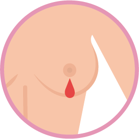
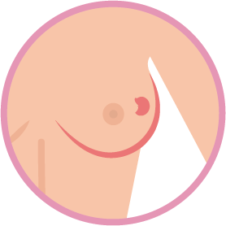
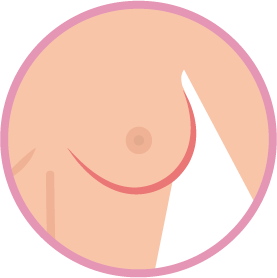
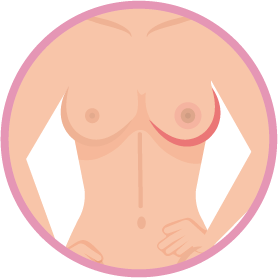
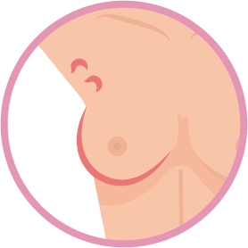
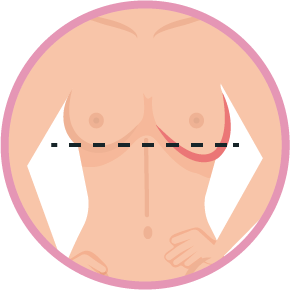
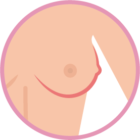
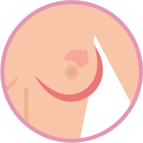
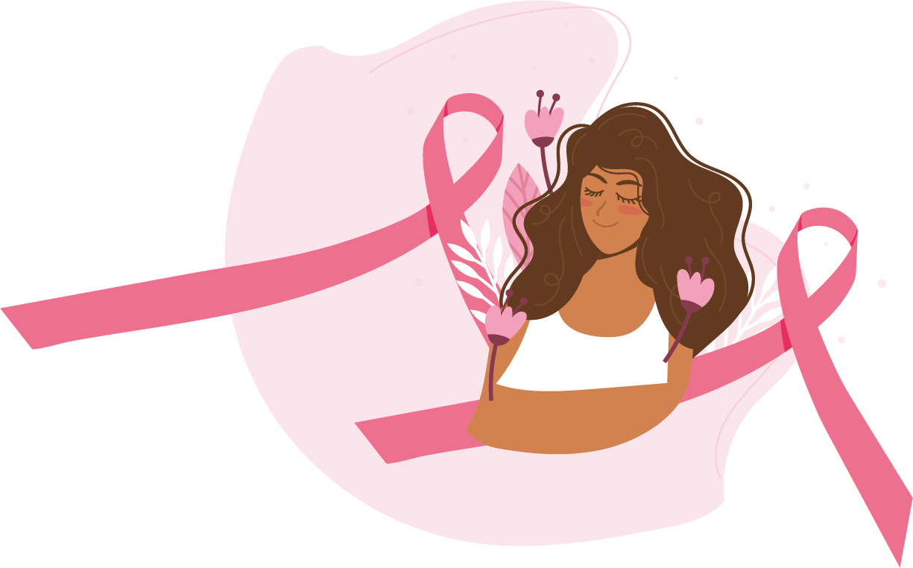
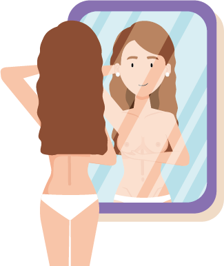

Cáncer de Mama
Cáncer de Mama
Prevención, detección temprana y cuidado integral
El cáncer de mama es el crecimiento anormal y desenfrenado de células malignas en el tejido mamario formando un bulto.
Carcinoma ductal: crecimiento anormal de células en los conductos mamarios.
Carcinoma lobulillar: crecimiento anormal de células malignas en los lobulillos del tejido mamario.
Población Objeto:

Secreción roja o marrón del pezón

Protuberancias e inflamación

Venas crecientes

Hundimiento del pezón

Piel de naranja

Asimetría de los senos

Grietas o erupciones en la piel
Bultos en la axila o seno

Cambios de temperatura o enrojecimiento
El cáncer de mama lo pueden padecer mujeres y hombres.
Un examen temprano puede detectar el cáncer a tiempo.
Autoexploración, examen clínico y mamografía son claves.
Desde los 40 años se recomienda control anual.
Entre los 50 y 69 años, mamografía cada 2 años.

Realízalo mensualmente para detectar cambios a tiempo.

Frente al espejo busca hundimientos, bultos, enrojecimiento o cambios en el pezón.
Con las manos en la cintura revisa que ambos senos estén al mismo nivel.
Palpa ambos senos con movimientos circulares desde la axila hacia el pezón.
Repite el proceso acostada para una mejor exploración.
Presiona suavemente el pezón para verificar si hay secreciones.